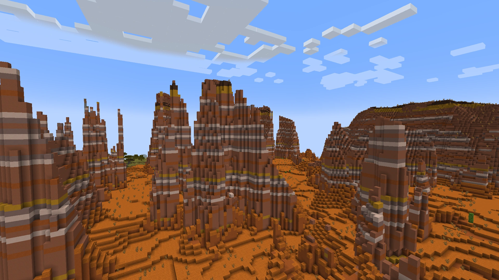
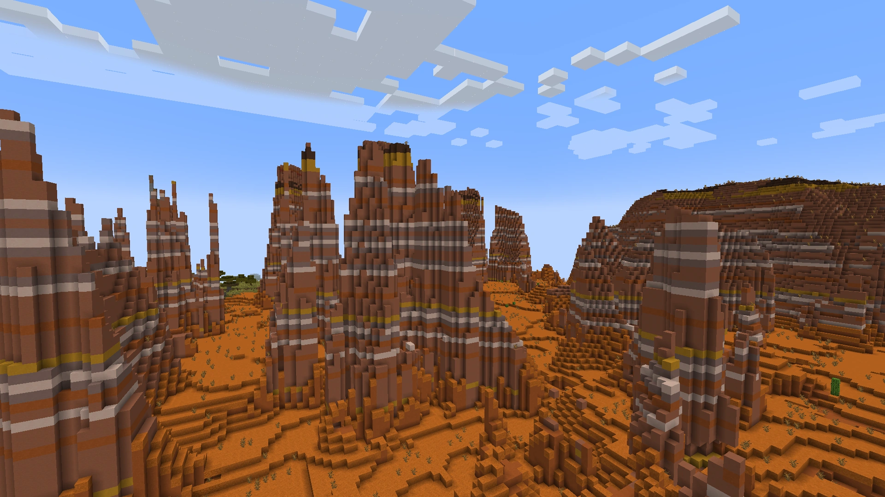
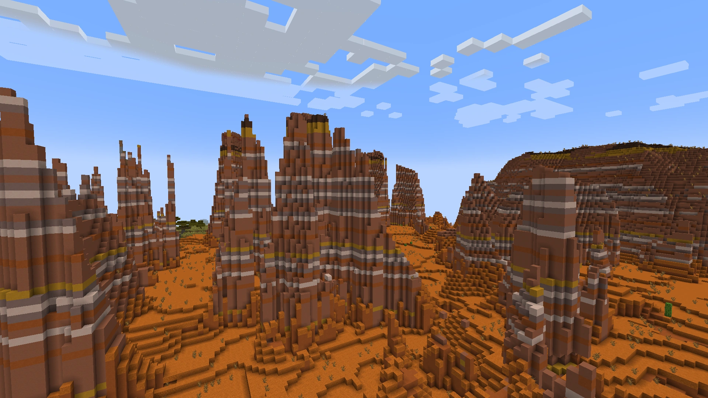

The Overworld is a boundless realm filled with opportunities for exploration, resource gathering, and
creativity. With diverse biomes and hidden treasures, it challenges players to survive, build, and embark on endless
adventures. The biomes that exist in the overworld consist of:
Click and Drag to see more....

Ocean
Vast bodies of water with unique creatures like dolphins, turtles, and various fish. Ocean
biomes often contain coral reefs, shipwrecks, and underwater ruins.
Mushroom Island
A rare biome with giant mushrooms and unique mooshroom cows. Hostile mobs do not spawn here,
making it a peaceful area.
Ice peaks
Characterised by tall, snowy mountains and ice spikes. These areas are challenging to
navigate due to the ample amount of packed ice.
Mountain
High altitude terrain with steep cliffs and scenic views. Goats and emerald ore are commonly
found here.
Plain
Flat, grassy areas perfect for building. They are home to many passive mobs such as horses,
cows, and sheep.
Spruce Forest
Dense forests with tall spruce trees. Often found in colder climates.
Birch Forest
Lighter forests with birch trees. Peaceful and serene, ideal for gathering wood.
Cherry Blossom Forest
Beautiful pink-leaved trees, adding a touch of colour and charm. They can be utilised as
decorations in gardens, paths and more.
Acacia Forest
Found in savannas, featuring unique, umbrella-shaped acacia trees. As they can only be found
in savannas, this biome is considered rare.
Jungle
Lush, dense forests with tall trees and vines. Home to ocelots, parrots, and pandas. Contains
jungle temples and cocoa beans.
Dark Oak Forest
A dense, shadowy biome filled with large, dark oak trees and thick canopies. Often home to
woodland mansions, this biome provides rich, dark oak wood and abundant resources.
Mangrove Forest
Found in swampy areas, these forests feature sprawling mangrove trees with extensive roots
and unique wood. The terrain is often watery and teeming with wildlife.
Bamboo Forest
Located in Jungle biomes, these forests are filled with tall bamboo stalks and create a lush,
green landscape. Bamboo forests are a primary source of bamboo and are home to pandas.
River
Winding water bodies that cut through various biomes. Ideal for fishing and transportation.
Swamp
Murky waters with lily pads, vines, and witch huts. Slimes and witches are common here.
Badlands
Also known as Mesa, this biome has colourful, layered clay and terracotta formations. Gold
ore is abundant in this biome.
Lush Cave
Filled with greenery, glow berries, and axolotls. A vibrant underground ecosystem.
Deep Dark
Dark and eerie, home to the terrifying Warden. Contains ancient cities, which contain
wonderful loot.
Dripstone Cave
Characterised by stalactites and stalagmites. Adds a unique aesthetic and dangerous spikes.


.webp) 
